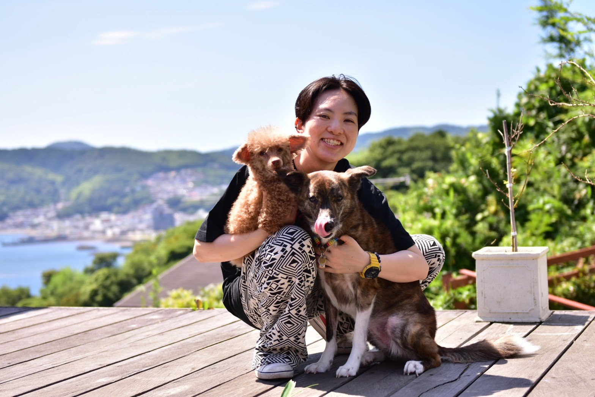
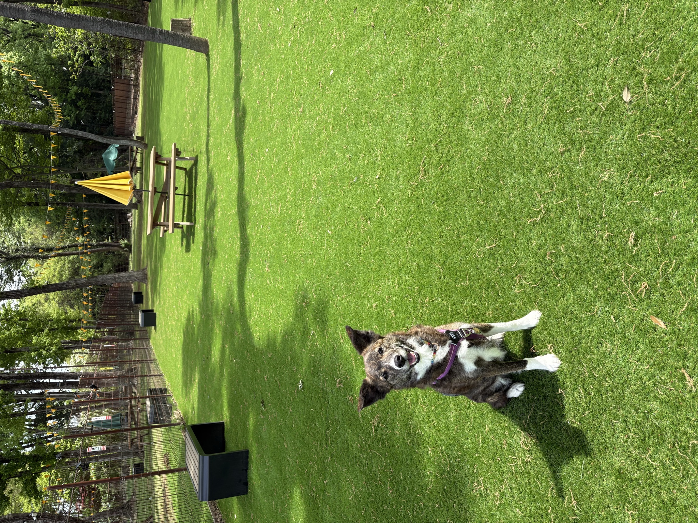
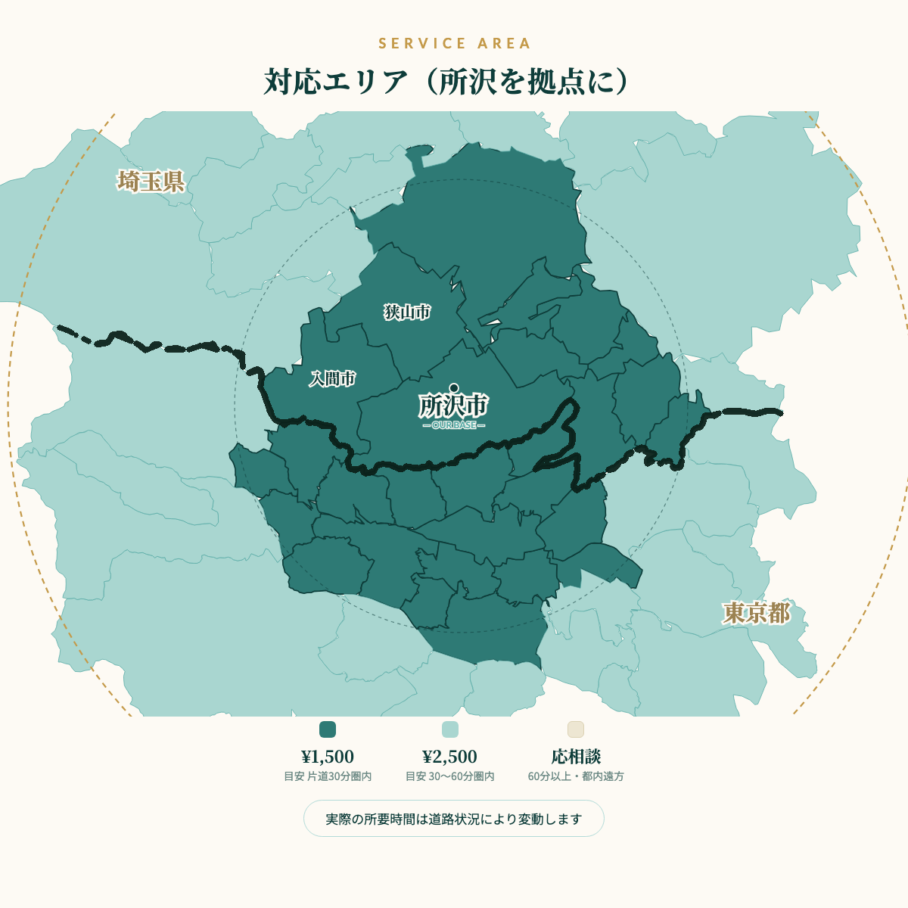
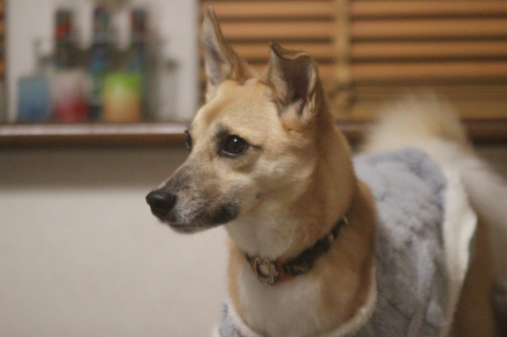
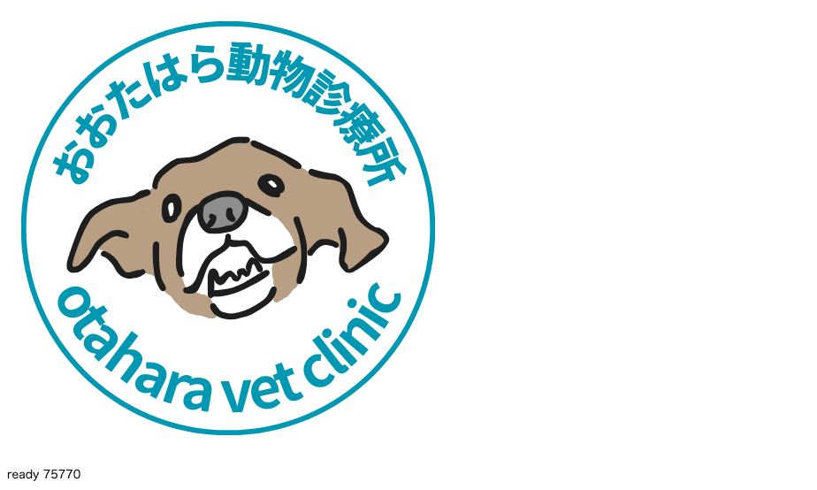

おおたはら動物診療所
所沢 ／ OTAHARA VET CLINIC
高齢、持病、通院がむずかしくなった子のために。
獣医師がご自宅へ伺い、その子のリズムに合わせたケアと、ご家族の不安に寄り添う時間をお届けします。

慣れた環境の中で過ごすことが、動物にとっての安心につながると考えています。すべてが治療で解決するわけではなく、日々のケアや環境、ご家族の関わり方も、同じくらい大切だと思っています。
「できるようにさせる」よりも「安心できる環境を整える」こと。できない日は、やらない——それもまた、その子のための選択だと考えています。
ご自宅に伺い、ペットと飼い主様の負担を減らしながら、安心して日常を過ごせる環境を整えます。
一頭一頭に合わせた丁寧なケアを行うため、一般的なサービスより少し高めの設定としています。すべて税込・キャッシュレス決済となります。
料金はすべて税込表示です
お支払いはキャッシュレスのみ（カード／Apple Pay／Google Pay）
複数の割増は重複適用されます
お散歩代行は、警報・注意報の発令時を除き雨天決行（雨天によるキャンセル料は無料）

埼玉県所沢市を拠点に、近隣のエリアへご自宅まで伺っています。地元で暮らす獣医師だからこそ、その子の生活圏や日常のリズムに合わせたケアをお届けできると考えています。

片道30分圏内 ¥1,500／30〜60分圏内 ¥2,500／60分以上は応相談
東京都内など遠方も状況に応じてご相談を承ります

通えない日も、不安な夜も。
その子の隣で、「これでいい」と
思える時間を。
ペットの高齢化や持病により、在宅でのケアの大切さは年々高まっています。「通院がむずかしい」「自分だけでは不安」——そのような状況の中でも、安心して毎日を過ごせるようサポートいたします。
まずは気軽に、話しかけてみてください。一緒に、その子に合う時間を考えていきましょう。

初回は状況確認だけでも構いません。
訪問後48時間はLINEでフォロー対応いたします。